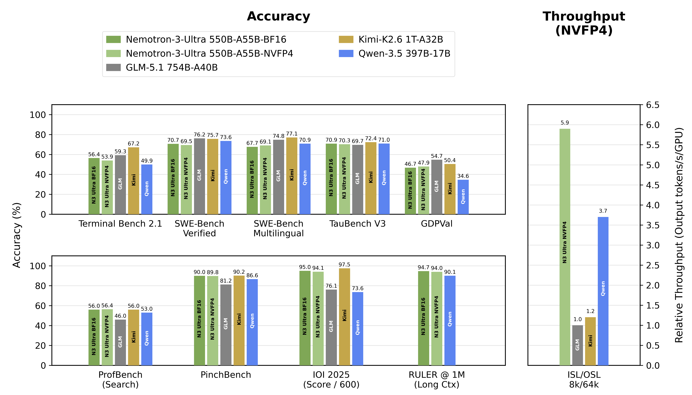
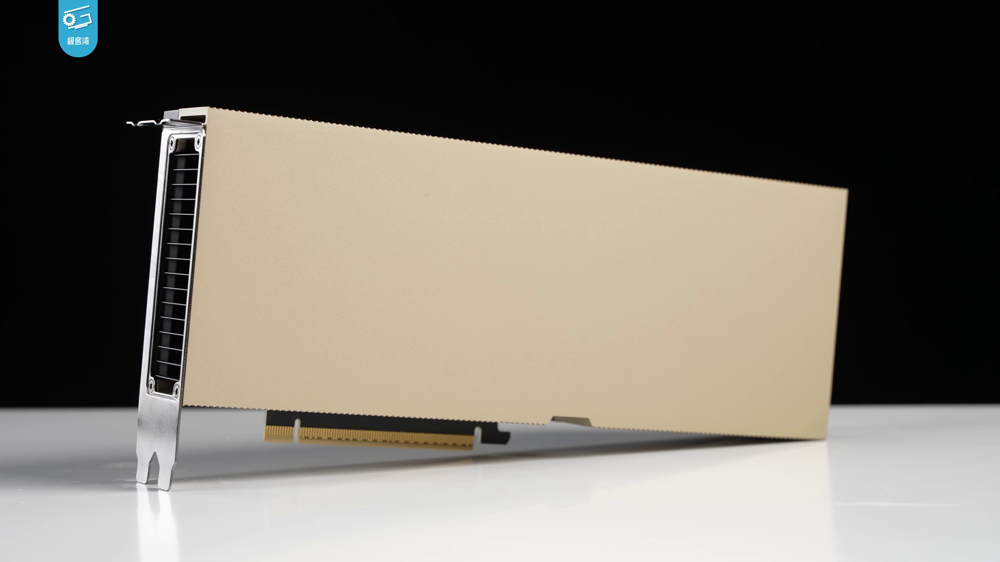

Executive Summary
On June 4, 2026, NVIDIA released Nemotron 3 Ultra, the strongest open-weight reasoning model the United States has put out. The weights, the training data, the recipe, even the reinforcement-learning environment all went up on Hugging Face under the Linux Foundation's OpenMDW-1.1 license, which permits broad commercial use. Among US open-weight models it clears the previous leader by a wide margin and takes a clear first place. And yet the higher seats on that same leaderboard belong to Chinese models. The global open-weight leader is still China's Kimi K2.6, and on the only independent benchmark available at launch, Nemotron sits below it. This report asks whether the framing — "strongest in America, but behind China" — holds up against the data, and where that gap actually comes from.
Technically, Nemotron 3 Ultra is a sparse design that grows total capacity while keeping per-token compute small. It carries an enormous parameter count, but wakes only about a tenth of it to process any single token. On the Artificial Analysis Intelligence Index, Nemotron scores roughly 48 to Kimi K2.6's 54, a six-point gap. But there's a twist inside that deficit. Nemotron leads on hallucination suppression and long-context reliability, and shows strength in throughput and efficiency. This isn't a clean "win and loss" so much as an asymmetry of strengths, and that asymmetry comes not from architecture but from differences in training and post-training data.
So the real signal in this release is not "another giant model." The moment frontier-grade weights become something anyone can download, serve on their own infrastructure, and fine-tune, the difference between companies shifts from access to the model toward what you feed it. The substance of America's gap with China, and the deciding factor when a company stands up its own agent on open weights, both come down to data quality and governance. The model is public; the competition is settled in the data.
48 ↔ 54
AA Intelligence Index · Nemotron ↔ Kimi K2.6
Top US open-weight model, six points behind China's leader
550B / 55B
Total params / active per token
A sparse LatentMoE that wakes only ~10%
~5× / ~3×
Throughput vs. comparable open models
Up to ~5× (NVIDIA-stated) / ~3× (independent)
22→4 mo
Open-to-closed time lag
Up to 22 months in 2024 → ~4 months in 2026
Strongest in America, behind China — where open-weight stands
Let's settle the headline with data first. Eight days after launch, there is effectively only one independent measurement that puts Nemotron 3 Ultra on the same scale as other models. The Artificial Analysis Intelligence Index folds ten benchmarks — GDPval, τ²-Bench, Terminal-Bench Hard, GPQA Diamond, Humanity's Last Exam, and more — into a single score. On that index Nemotron 3 Ultra lands at about 48 (47.7). That clears the previous US open-weight leaders, Gemma 4 31B (39) and OpenAI's GPT-OSS 120B (33), by a wide margin, an unambiguous American first place.
The problem is what sits above it. The upper open-weight seats on the same leaderboard are occupied by Chinese models. Kimi K2.6 and Xiaomi's MiMo-V2.5-Pro lead at roughly 54 each, with DeepSeek V4 Pro and the Qwen line right behind at 52. Nemotron (48) trails all of these Chinese front-runners. The bars below show exactly that ranking: orange is American, gray is Chinese.
Open-weight AA Intelligence Index, June 2026, rounded. Nemotron 3 Ultra leads US open weights but trails all four Chinese front-runners. Source: Artificial Analysis, The Batch (2026-06).
One caveat needs stating plainly. Most of the individual benchmark scores are vendor-stated figures that NVIDIA published itself, and at the eight-day mark third-party reproduction is not yet complete. So when this report talks about model-to-model ranking it leans on the independent AA Intelligence Index, and every detailed score NVIDIA published is flagged as "vendor-stated." A piece about data can't be dishonest about where its data comes from.
1.1The strengths split — not a ranking, an asymmetry
Read "48 vs. 54" as a single line and Nemotron simply looks beaten. Unfold the individual benchmarks and the picture changes. By NVIDIA's technical report (Table 10), Kimi K2.6 leads on agentic and knowledge tasks — terminal work, multilingual coding, expert knowledge. Nemotron, conversely, leads on non-hallucination rate and long-context reliability. Two models from the same sparse-MoE family, with strengths pulling in opposite directions. The table below lays out that asymmetry.
| Area | Benchmark (vendor-stated) | Edge |
|---|---|---|
| Hallucination suppression | AA-Omniscience non-hallucination 78.7 | Nemotron |
| Long context | RULER @1M 94.7% | Nemotron |
| Agentic (terminal) | Terminal-Bench / PinchBench | Kimi K2.6 |
| Multilingual coding | SWE-Multilingual 77.1 | Kimi K2.6 |
| Expert knowledge | GPQA Diamond ~90.5% | Kimi K2.6 |
All individual figures are vendor-stated (NVIDIA / Moonshot), third-party reproduction pending. Source: Nemotron 3 Ultra Technical Report Table 10, Kimi K2.6 model card.

"Strongest in America, but behind China" holds up as fact on the independent index. But hidden inside those six points is an asymmetry of strengths. Nemotron lies less and reads long documents better; the Chinese models handle tools and write code better. Where that split comes from is the real question of this report.
550B, but 55B active — what LatentMoE was after
Nemotron 3 Ultra's identity compresses into two numbers: 550B total parameters, but only 55B active when it processes a single token. About a tenth of the whole does the work. That is the core idea of a Mixture-of-Experts (MoE): pack knowledge broadly into a large capacity, then call only a subset of experts per input to keep inference cheap. NVIDIA gives this model 512 experts and routes each token to the top 22 (confirmed in Table 1 of the technical report).
Processing one token activates only about 10% (55B) of the full 550B. Top 22 of 512 experts selected per token.
But Nemotron's design goes beyond a plain MoE. The structure NVIDIA calls LatentMoE weaves three things into one body: Mamba-2-style state-space layers that cut attention cost and KV cache, selective attention placed only where it's needed, and multi-token prediction (MTP) that looks several tokens ahead at once. Below is a simplified view of that stack.
LatentMoE hybrid composition (simplified from Table 1 of the technical report). A design aimed at "big but fast."
The payoff of this design is throughput. NVIDIA reports throughput at 5.9× GLM-5.1, 4.8× Kimi K2.6, and 1.6× Qwen-3.5 against comparable open models. But that "5×" is NVIDIA's own measurement, which is worth flagging. The independent house Artificial Analysis clocked output speed at about 181 tok/s, roughly 3× the comparison-group median (around 60 tok/s). The honest reading is up to 5× by the vendor's numbers, about 3× by independent measurement. Either way, the fact that a model of this weight is fast doesn't change.

A sparse structure sharpens the question of "what did you fill the capacity with," because which expert learned what governs performance. Being fast doesn't mean you can feed it less data — it means you have to feed it the same data better.
Efficiency comes with a caveat too. In AA's measurements Nemotron tended to be verbose, generating about 2.3× more output tokens than the median comparable model to solve the same benchmark. More tokens mean higher inference cost. NVIDIA claims "up to 30% lower cost per task," but the real economics depend on how verbose your workload's outputs need to be. Speed and cost are not the same axis.
LatentMoE produced a "big but fast" model. It holds 550B of capacity but wakes only 55B per token, and Mamba-2 plus MTP push the speed up. But the sparser and more specialized the structure, the more directly performance hangs on what those experts learned — the quality of the data. The architecture is the vessel; what fills it is data.
OpenMDW-1.1 dissected — a license that attaches rights to weights
The phrase "open weight" has long carried an ambiguity. Model weights are not human-written code; they are a mass of numbers produced by training. So when you attach a license like Apache 2.0 — built on the premise of copyrighted code — to weights, what rights does the recipient actually receive? OpenMDW-1.1 confronts that question head-on. It is a permissive license designed specifically for models, published by the Linux Foundation on May 28, 2026, and adopted by NVIDIA across the Cosmos, Isaac GR00T, and Nemotron families.
OpenMDW's core move is to treat weights, data, code, and documentation as a single bundle of "Model Materials," and to grant rights over it explicitly — copyright, patent, database rights, even trade secret. There are no separate restrictions on outputs (unlimited, no attribution), and commercial use is royalty-free. Set it beside Apache 2.0 and Meta's Llama Community License and the differences sharpen.
| Item | OpenMDW-1.1 | Apache 2.0 | Llama Community |
|---|---|---|---|
| Designed for | Model + data + weights + code | Software code | Meta Llama models |
| Commercial use | Unlimited, royalty-free | Unlimited | Separate license above 700M MAU |
| Output restrictions | Explicitly unlimited, no attribution | Unspecified | "Viral" obligation propagates |
| IP scope covered | Copyright · patent · DB rights · trade secret | Copyright · patent | Custom grant |
| Use restrictions | None | None | Geographic / use-case limits |
License key-terms comparison. Source: openmdw.ai, Linux Foundation, Diginomica analysis (2026-05~06).
Still, not everyone views this license favorably. Red Hat's open-source legal lead, Richard Fontana, said he sees "no compelling reason to choose OpenMDW over Apache 2.0" and that Red Hat has no plans to use it. Some raise concerns of "openwashing," leaning on the image of openness more than the substance. The license itself is new as of May 2026, so adoption outside NVIDIA remains uncertain. For that reason this report's analysis is an interpretation offered, not legal advice, and any real adoption should run through your own counsel first.
OpenMDW-1.1 is a model-specific license that meets the "is there copyright in weights?" ambiguity head-on rather than sidestepping it. By spelling out commercial, derivative, and output rights, it widens the path for companies to build their own services. But being new, its legal interpretation is still forming, and an adoption decision should start from reading the license terms.
vLLM and SGLang in practice — you can run it, but it isn't light
"Can we run it on our own GPUs?" is the most practical question. The answer is "yes, but not lightly." At NVFP4 quantization it needs roughly 330–352 GB of memory, and NVIDIA recommends 4×B200 or 8×H100. The BF16 original is about 1.1 TB — tight for a single node, with CPU offloading in tow. One thing that eases the burden: the same NVFP4 checkpoint runs on both Hopper and Blackwell. The table below lays out deployment resources by precision.
| Configuration | Memory | Recommended GPU | Notes |
|---|---|---|---|
| NVFP4 | ~330–352 GB | 4×B200 / 8×H100 | Recommended launch config |
| BF16 | ~1.1 TB | More GPUs | Tight on a single node, CPU offload |
| INT4 (extreme) | ~2×96 GB | 2×RTX PRO 6000 | Accept the quality drop |
Deployment resource estimates. Source: NVIDIA NIM deployment guide, vLLM blog, independent tester (dredyson), Spheron (2026-06).

The serving stack was ready from launch day. vLLM supports it day-0 (v0.22.0), and the launch command for the most common NVFP4, 8×H100 configuration is concise.
There is a caveat at high concurrency, though. vLLM has shown some unfinished cases under heavy concurrent load like 256-way (4×Blackwell completed 450/512, HGX H100 229/512). If your production has high concurrency or repeatedly reuses long system prompts, SGLang with RadixAttention or TensorRT-LLM is more stable — both completed the concurrency test above.
4.1"1M context" — the card spec and real serving differ
The model card's "1M-token context" is attractive, but it's a distance from real use. Context has to be read in three tiers. The architectural maximum is 1M, but the default serving setting is 256K, and independent testers report 32K is stable, 64K is tight, and 1M is realistically hard because the KV cache demands several TB of VRAM. The long-context strength — RULER 1M 94.7% — is real, but it must be judged separately from the resources of real serving.
Cost splits two ways: self-hosting and API. Cloud self-hosting runs roughly $7.28/hour (8×RTX PRO 6000) to $14.24/hour (8×H200) depending on configuration. Via API it's lighter — about $0.37–0.50 per million input tokens and $1.08–2.50 output, roughly 1.9–2.6× cheaper than Kimi K2.6's $0.95/$4.00. Some channels also offer a free tier in the early launch window, but that may be promotional and is too soon to factor into long-term cost.
Deployment is possible but not light. NVFP4 on 4×B200 or 8×H100 runs, and vLLM backs it day-0, but high concurrency is safer on SGLang/TensorRT-LLM, and "1M context" should be read as a practical 64K or so. The adoption decision starts by plugging three variables — concurrency, context, cost — into your own workload.
The gap is data — the more models level out
Now back to the asymmetry from Section 1. Nemotron hallucinates less; the Chinese models handle tools better. Both run the same family of architecture, a sparse MoE. So why do the strengths split in opposite directions? If the architecture is the same, one variable remains: what that enormous capacity was filled with — the training data and the post-training pipeline (supervised fine-tuning, reinforcement learning from verifiable rewards, and so on).
This reading lines up with the macro trend. By Epoch AI's Capability Index (ECI), the time lag for open models to catch closed ones compressed from 5–22 months in 2024 to about 4 months in May 2026. Knowledge benchmarks like MMLU have both open and closed past 91%, with the gap effectively gone. As weight access and baseline knowledge level out, the difference between models widens increasingly in the data and post-training. Epoch itself adds a caveat: open models may be overfitting public benchmarks, so the real gap could be underestimated. The more the public scores converge, the more true skill divides on invisible data quality.
That leveling, though, isn't uniform — which is worth seeing alongside the rest. Unlike knowledge benchmarks where the gap has closed, closed models still lead on coding, agentic tasks, and private evaluations. On the same AA Intelligence Index, the top closed model sits at about 65 — roughly 11 points above the top open model, Kimi K2.6 (about 54). The line dividing where the gap closed from where it remains happens to overlap with the boundary between capabilities easy to learn from public text (knowledge) and capabilities that require rich interaction and tool-use trajectories (agentic, coding). Either way, what draws that line is, in the end, data.
Translate data quality into measurable language and you arrive at data-quality dimensions like ISO 5259 — diagnosing training and fine-tuning data along axes such as accuracy, completeness, consistency, and timeliness. Nemotron's hallucination-suppression edge can be read as the result of factuality-verified data and reward models; the Chinese models' agentic edge as the result of richly learned tool-use trajectories. Strengths are inscribed not in architecture but in data.
As model weights go public and baseline capabilities level out, the center of gravity in competition shifts from "which model you use" to "what you feed it." The asymmetry splitting Nemotron's strengths from the Chinese models' is the evidence. The quality of a model's internal representations is, in the end, the quality of its training data — and the gap is decided in the data.
What it means in practice — building an agent on open weights
Korea has already become a stage for the Nemotron ecosystem, a useful case for any market weighing sovereign AI. The first Nemotron Developer Days were held in Seoul on April 21–22, 2026, and a panel on a homegrown Korean foundation model, co-hosted by the Ministry of Science and ICT, drew four consortia: SK Telecom, Upstage, Elice Group, and Motif Technologies. Nemotron 3 Ultra lists Korean among its natively supported languages. Amid the momentum of sovereign AI and data sovereignty, serving open weights on your own infrastructure is becoming an increasingly real strategy.
So the decisions a company faces when building its own agent on open weights like Nemotron come in three layers. The sections of this report turn directly into a checklist.
1License compliance — Confirm OpenMDW-1.1's commercial, derivative, and output rights (Section 3). Being new, run it through your own counsel in parallel.
2Fine-tuning data-quality diagnosis — Measure the data you'll feed the model along ISO 5259 dimensions (accuracy, completeness, consistency, timeliness) (Section 5). This is the real point where model performance splits.
3Deployment-stack choice — Plug concurrency, context, and cost into your own workload to choose among vLLM, SGLang, and TensorRT-LLM (Section 4).
Of the three layers, #1 and #3 are relatively stable once set. But #2, data-quality diagnosis, is a standing task that recurs every time you retune the model. In an era when the model is public, this one line tells you where a company's competitiveness ultimately divides. Everyone downloads the same model; the data you put on top of it differs from company to company.
Building your own agent on open weights is a three-layer decision: license compliance, data-quality diagnosis, and deployment-stack choice. License and deployment are close to one-time decisions, but data-quality diagnosis is the recurring battleground at each tuning. The bottleneck in the consortium momentum that began in Seoul lies not in the model but in the data.
Why Pebblous is watching this release — the question after the model
There is one place this report keeps returning to: the model is public, and the difference widens in the data. Pebblous is watching the Nemotron 3 Ultra release not for the new model's performance itself, but for the question it leaves behind once it has solved the problem it solved.
Where business meets technology
With a 550B open-weight model, "access to a frontier model" is no longer the bottleneck. NVFP4 runs on 4×B200, and OpenMDW-1.1 permits broad commercial use. So where does the bottleneck move? To the questions of data fitness and governance: "Can we tune this model on our data, and is that data clean enough?" That is exactly the domain of DataClinic and AI-Ready Data. On-prem open-weight serving connects directly to the sovereign-AI movement, and the same logic carries into on-device inference in the Physical AI context.
Data quality makes the model
The asymmetry this report found is evidence for the Pebblous thesis. Nemotron is overwhelming at hallucination suppression; the Chinese models lead on agentic and coding tasks. That the strengths split within the same sparse MoE is a matter not of architecture but of training and post-training data. The larger a model's capacity grows and the more specialized its structure, the more directly which expert learned what is transcribed into performance. "The quality of a model's internal representations is the quality of its training data" reads straight off the benchmark table.
Implications for customer practice
Of the three-layer decision a company faces in building a Nemotron-based agent (Section 6), license and deployment are stable once set, but data-quality diagnosis recurs at every tuning. The model may be public, but the data differs by company, and measuring whether that data is sufficient and accurate remains someone's standing task. Diagnosis along ISO 5259 dimensions is the work of translating that task into measurable language.
Editor's Note. This report reads Nemotron 3 Ultra as a model that is "strongest in America but behind China," and argues the substance of that gap lies in data and post-training rather than architecture. Pebblous sees this "data-quality layer above the model" as overlapping with its own direction. That judgment, though, is for each reader to test in their own context, and there is no need to read this piece's conclusion as a claim of any one product's superiority.
※ This analysis is current as of the June 4, 2026 launch; at the eight-day mark the only independent benchmark is the Artificial Analysis Intelligence Index. Individual benchmarks include vendor-stated figures from NVIDIA, Moonshot, and others, with third-party reproduction underway. Scores and rankings may be updated by subsequent measurement.
References
Primary technical documents (NVIDIA · Hugging Face)
- 1.NVIDIA. "NVIDIA Nemotron 3 Ultra Technical Report." 2026-06-09 (Table 1 architecture, Table 10 post-training).
- 2.NVIDIA. "Nemotron 3 Ultra 550B-A55B Model Card." Hugging Face, 2026-06-04.
- 3.NVIDIA. "Nemotron 3 Ultra Powers Faster, More Efficient Reasoning." NVIDIA Developer Blog, 2026-06-04.
Benchmarks · data · policy
- 4.Artificial Analysis. "NVIDIA Nemotron 3 Ultra Released." 2026-06.
- 5.Artificial Analysis. "Nemotron 3 Ultra — Model Page / Leaderboards." 2026-06.
- 6.DeepLearning.AI. "The Batch — Kimi K2.6." 2026-06.
- 7.Epoch AI. "Open vs Closed Model Performance Gap (ECI)." 2026.
- 8.Hugging Face. "State of Open Source, Spring 2026." 2026.
Deployment · license · ecosystem
- 9.vLLM. "Day-0 Support for Nemotron 3 Ultra." vLLM Blog, 2026-06-04.
- 10.Linux Foundation. "OpenMDW-1.1 License." 2026-05-28; Diginomica. "What OpenMDW-1.1 Guarantees."
- 11.The Decoder. "Nvidia's Nemotron 3 Ultra Becomes the Smartest Open US Model, but China Still Leads." 2026-06.
- 12.Digital Today. "Nemotron Developer Days Seoul 2026 / co-hosted by the Ministry of Science and ICT." 2026-04.